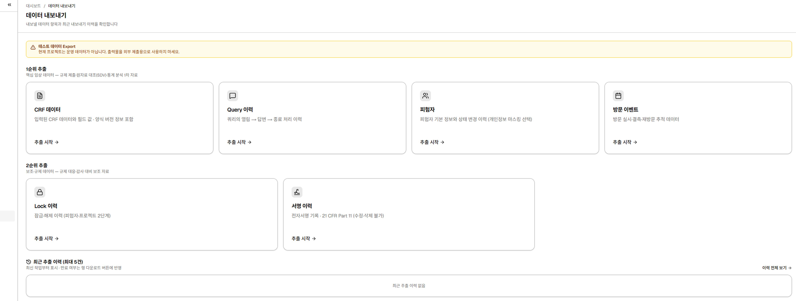
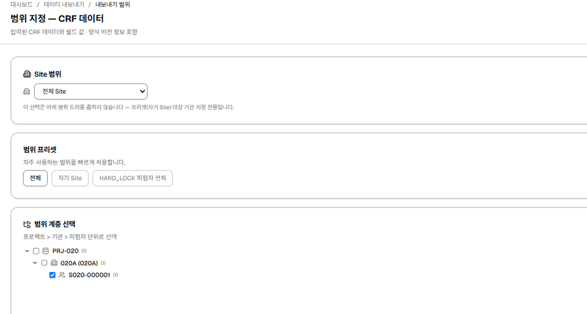
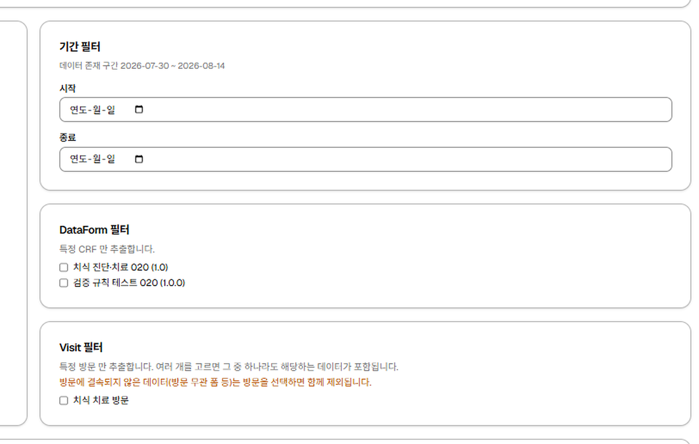
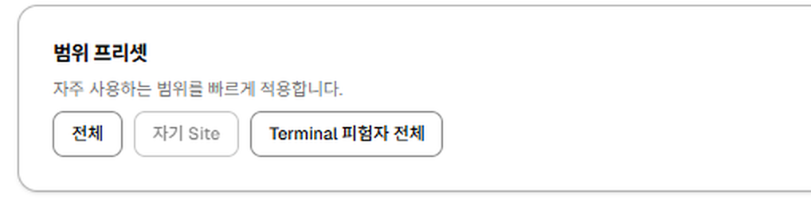
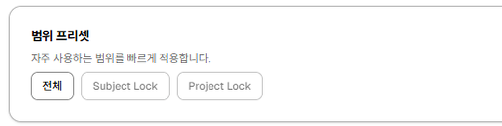
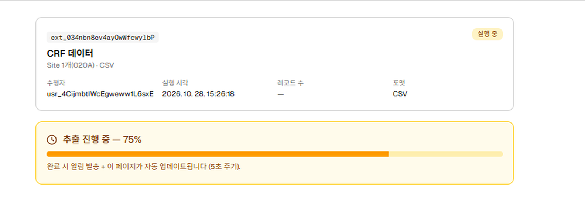
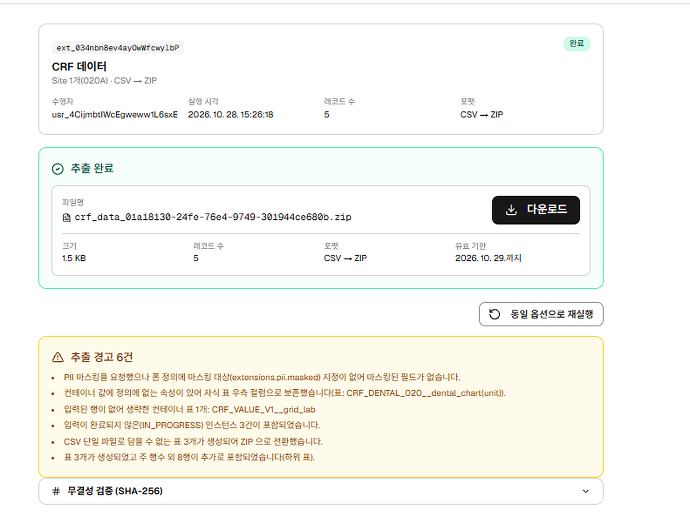
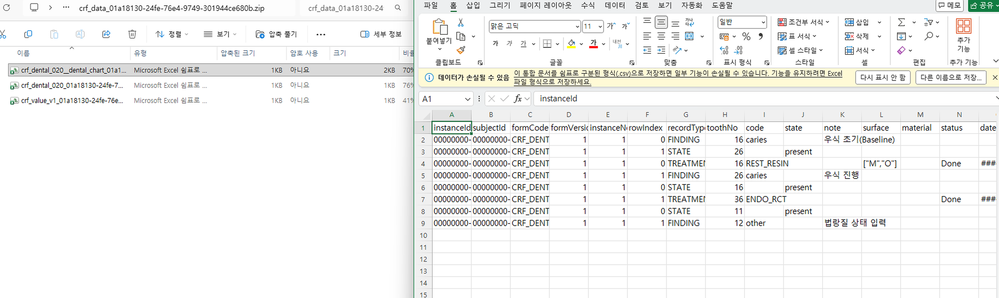

데이터 내보내기
SCR-EXP-001·002·003·006 · 허브 · 범위 지정 · 추출 옵션 · 다운로드
데이터 내보내기
- 1.1화면 구성
- 1.2범위 고르기
- 1.3필터와 예상 규모
1.1화면 구성
개요
연구 자료를 파일로 받아 가는 화면입니다. 무엇을 받을지 유형을 먼저 고르고, 그 뒤에 범위와 옵션을 정하는 순서입니다. 유형은 규제 제출에 바로 쓰는 1순위 4종과 감사 대비 보조 자료인 2순위 2종으로 나뉩니다. 추출은 시간이 걸리는 작업이라 요청해 두고 완료 알림을 받는 방식으로 동작합니다.
화면 설명

추출 시작 → — 그 유형의 범위 지정 화면으로 이동합니다 1.2. 카드마다 하나씩 있습니다.
이력 전체 보기 → — 지난 추출 작업을 모두 모아 보는 화면으로 이동합니다. 내려받지 못한 파일을 다시 찾을 때 사용합니다.
이동 경로는 대시보드 / 데이터 내보내기 입니다.
프로젝트 상태 배너 — 지금은 “테스트 데이터 Export … 출력물을 외부 제출용으로 사용하지 마세요.” 입니다. 운영이 끝난 프로젝트에서는 초록색 「확정 데이터 Export」 로 바뀝니다.
1순위 추출 — “핵심 임상 데이터 — 규제 제출·원자료 대조(SDV)·통계 분석 1차 자료” 입니다.
카드 구성 — 유형 이름 · 담기는 내용 · 추출 시작 입니다. 어떤 자료가 들어가는지 설명을 먼저 읽고 고르십시오 (아래 표 참조).
2순위 추출 — “보조·규제 데이터 — 규제 대응·감사 대비 보조 자료” 입니다.
최근 추출 이력 (최대 5건) — 최신 작업부터 표시되며, 만료 여부가 행의 다운로드 버튼에 반영됩니다.
아직 추출한 적이 없으면 최근 추출 이력 없음 으로 비어 있습니다.
추출 유형 6종
| 순위 | 유형 | 담기는 내용 |
|---|---|---|
| 1순위 | CRF 데이터 | 입력된 CRF 데이터와 필드 값 · 양식 버전 정보 |
| 1순위 | Query 이력 | 쿼리의 열림 → 답변 → 종료 처리 이력 |
| 1순위 | 피험자 | 피험자 기본 정보와 상태 변경 이력 |
| 1순위 | 방문 이벤트 | 방문 실시 · 결측 · 재방문 추적 데이터 |
| 2순위 | Lock 이력 | 잠금 · 해제 이력 (피험자 · 프로젝트 2단계) |
| 2순위 | 서명 이력 | 전자서명 기록 · 21 CFR Part 11 (수정 · 삭제 불가) |
유의사항
오해하기 쉬운 동작
- • 이 화면은 데이터 관리자와 감사자만 들어올 수 있습니다. 연구책임자 · 연구간호사 · 모니터요원 · 워크스페이스 관리자에게는 왼쪽 메뉴에 나타나지 않습니다. 다만 프로젝트가 종료된 뒤에도 추출은 가능합니다 — 제출·보관 자료를 만들어야 하기 때문입니다.
1.2범위 고르기
개요
유형을 고르면 무엇을 담을지 범위를 정하는 화면이 열립니다. 범위는 세 가지 방법으로 좁힙니다 — Site 범위로 기관을 지정하고, 프리셋으로 자주 쓰는 조합을 한 번에 적용하고, 범위 계층 트리에서 프로젝트 · 기관 · 피험자를 직접 체크합니다. 화면 오른쪽에는 기간과 양식으로 거르는 필터가 이어집니다 1.3.
화면 설명

Site 범위 — 대상 기관을 고릅니다. 이 선택만으로는 아래 트리가 좁혀지지 않습니다 — 프리셋의 대상 기관을 정하는 용도입니다.
범위 프리셋 — 자주 쓰는 범위를 한 번에 적용합니다. 유형마다 구성이 다릅니다 2.1 · 2.2.
범위 계층 트리 — 프로젝트 · 기관 · 피험자를 직접 체크합니다. 상위를 체크하면 하위가 함께 선택됩니다.
범위 지정 — 유형명 과 그 유형에 담기는 내용이 제목에 표시됩니다. 엉뚱한 유형에 들어오지 않았는지 여기에서 확인하십시오.
Site 범위 안내 — “이 선택은 아래 범위 트리를 좁히지 않습니다 — 프리셋(자기 Site) 대상 기관 지정 전용입니다.”
프리셋 안내 — “자주 사용하는 범위를 빠르게 적용합니다.”
자기 Site 가 흐리게 표시되어 있습니다 — 위 Site 범위가 전체 Site 라 대상 기관이 정해지지 않았기 때문입니다. 기관을 하나 고르면 활성화됩니다.
트리 안내 — “프로젝트 > 기관 > 피험자 단위로 선택”. 유형에 따라 기관 단위까지만 고르는 경우도 있습니다 2.1.
항목 옆 괄호 안 숫자가 그 아래에 딸린 건수입니다.
유의사항
필수 확인 데이터 손상 · 폼 완료 불가
- • Site 범위를 고르는 것만으로는 범위가 좁혀지지 않습니다. 그 값은 「자기 Site」 프리셋이 가리킬 기관을 정할 뿐이며, 실제로 추출될 대상은 아래 트리에서 체크한 것입니다. 기관만 고르고 트리를 비워 두면 아무것도 추출되지 않습니다.
1.3필터와 예상 규모
개요
트리로 고른 범위를 더 좁히는 필터가 오른쪽에 있습니다. 필터 구성은 유형마다 다릅니다 — 기간 필터는 모든 유형에 공통이고, DataForm 필터와 Visit 필터는 해당 자료가 있는 유형에만 나타납니다. 화면 아래의 예상 레코드 수는 추출하기 전에 규모를 미리 계산해 보여 줍니다.
화면 설명


기간 필터 — 시작. 비워 두면 처음부터입니다.
기간 필터 — 종료. 비워 두면 끝까지입니다.
DataForm 필터 — 특정 CRF 만 추출합니다. 체크하지 않으면 전부 포함됩니다.
Visit 필터 — 특정 방문만 추출합니다. 여러 개를 고르면 그중 하나라도 해당하는 자료가 포함됩니다.
옵션 설정으로 이동 → — 추출 옵션 창을 엽니다 3.1.
데이터 존재 구간 이 함께 표시됩니다 — 그 바깥 날짜를 넣으면 결과가 비게 되므로 이 구간을 보고 정하십시오.
DataForm 필터 안내 — “특정 CRF 만 추출합니다.”
Visit 필터의 붉은 경고 — “방문에 결속되지 않은 데이터(방문 무관 폼 등)는 방문을 선택하면 함께 제외됩니다.”
예상 레코드 수 — Subject · 레코드 · CRF 인스턴스 세 숫자로 추출 전 규모를 알려 줍니다. 범위를 고르지 않으면 계산되지 않습니다.
취소 — 범위 지정을 버리고 돌아갑니다.
유의사항
필수 확인 데이터 손상 · 폼 완료 불가
- • 방문 필터를 걸면 방문과 무관한 자료가 함께 빠집니다. 화면이 붉은 글씨로 직접 경고하는 내용입니다 — 특정 방문만 받으려다 방문에 묶이지 않은 CRF 까지 빠질 수 있으므로, 제출용 추출에서는 방문 필터를 비워 두는 편이 안전합니다.
유형별 범위 지정
- 2.1Query 이력 · 피험자
- 2.2방문 이벤트 · Lock · 서명
2.1Query 이력 · 피험자
개요
범위 지정 화면의 생김새는 유형이 바뀌어도 같습니다. 달라지는 것은 범위 프리셋 3종과 오른쪽 필터 구성뿐입니다. 그런데 상태를 기준으로 거르는 프리셋은 현재 눌리지 않습니다 — 서버 쪽 범위 계약에 그 조건이 아직 없어서 눌러도 전체와 같은 결과가 되기 때문에, 잘못된 안심을 막으려고 비활성으로 두었습니다.
화면 설명


Query 이력 의 프리셋 — 전체 · OPEN + ANSWERED · CLOSED 만. 뒤의 두 가지는 상태 기준이라 현재 비활성입니다. 미처리 Query 만 받으려면 트리에서 대상을 직접 고르십시오.
피험자 의 프리셋 — 전체 · 자기 Site · Terminal 피험자 전체. 마지막은 사용할 수 있습니다 — 종료 상태로 굳은 피험자(선별 실패 · 조기 종료 · 추적 소실 · 사망 · 연구 종료) 5종을 한 번에 고릅니다.
유형별 프리셋과 사용 가능 여부
| 유형 | 프리셋 3종 | 사용 가능 여부 |
|---|---|---|
| CRF 데이터 | 전체 · 자기 Site · HARD_LOCK 피험자 전체 | 전부 사용 가능 |
| Query 이력 | 전체 · OPEN + ANSWERED · CLOSED 만 | 뒤 2종 비활성 |
| 피험자 | 전체 · 자기 Site · Terminal 피험자 전체 | 전부 사용 가능 |
| 방문 이벤트 | 전체 · 자기 Site · 예정 방문만 | 마지막 비활성 |
| Lock 이력 | 전체 · Subject Lock · Project Lock | 뒤 2종 비활성 |
| 서명 이력 | 전체 · DataInstance 서명 · DataLock 서명 | 전부 사용 가능 |
유의사항
오해하기 쉬운 동작
- • 흐리게 표시된 프리셋은 고장이 아닙니다. 눌렀을 때 전체와 같은 결과가 나오면 필터가 걸린 것으로 오인하게 되므로 일부러 막아 둔 것입니다. 버튼 위에 마우스를 올리면 사유가 표시되며, 그 조건으로 좁히려면 범위 계층 트리에서 직접 선택하는 것이 지금의 방법입니다.
2.2방문 이벤트 · Lock · 서명
개요
2순위 유형과 방문 이벤트의 프리셋입니다. 서명 이력만 세 가지가 모두 살아 있고, 방문 이벤트와 Lock 이력은 상태 기준 프리셋이 비활성입니다. 유형이 달라도 Site 범위 · 범위 계층 트리 · 기간 필터 · 예상 레코드 수의 자리와 쓰는 법은 같습니다 1.2 · 1.3.
화면 설명



방문 이벤트 — 예정 방문만 이 비활성입니다. 예정 방문만 받으려면 오른쪽 Visit 필터에서 방문을 직접 고르십시오.
Lock 이력 — Subject Lock · Project Lock 둘 다 비활성입니다. 두 단계를 가려 받을 수 없으므로 전체로 받은 뒤 파일에서 구분하십시오.
서명 이력 — DataInstance 서명(자료 서명)과 DataLock 서명(잠금 서명) 모두 사용할 수 있습니다. 서명 종류를 나눠 받을 때 사용합니다.
유형에 따라 달라지는 것 · 같은 것
- • 달라지는 것 — 범위 프리셋 3종 · 오른쪽 필터 구성 · 트리에서 고를 수 있는 단위
- • DataForm 필터 는 CRF 데이터 에만 있습니다
- • Visit 필터 는 CRF 데이터 와 방문 이벤트 에만 있습니다
- • 피험자 는 트리를 기관 단위까지만 고릅니다 (피험자 정보 자체가 추출 대상)
- • 같은 것 — Site 범위 · 범위 계층 트리 · 기간 필터 · 예상 레코드 수 · 하단 버튼
유의사항
오해하기 쉬운 동작
- • Lock 이력은 단계를 가려 받을 수 없습니다. 피험자 잠금과 프로젝트 잠금을 나눠 달라는 요청은 현재 프리셋으로 처리되지 않으므로, 전체로 추출한 뒤 결과 파일에서 구분하십시오. 추출 자체는 정상으로 수행됩니다.
옵션과 실행
- 3.1추출 옵션 설정
- 3.2추출 진행 중
- 3.3추출 완료와 내려받기
3.1추출 옵션 설정
개요
범위를 정한 뒤 어떻게 내보낼지를 정하는 창입니다. 항목에 번호가 붙어 있어 위에서 아래로 확인하면 됩니다. 기본값만으로도 추출할 수 있으며, 규제 제출용이라면 ③ 마스킹과 ⑤ 아카이브 포함을 반드시 확인하십시오.
화면 설명

② 파일 포맷 — CSV(쉼표 구분 텍스트) · Excel(시트 분할 가능) · ZIP(결과를 압축) 3종입니다.
③ PII 마스킹 — 피험자를 식별할 수 있는 값을 가립니다. 권한이 없으면 켜진 채로 고정됩니다.
④ 미확정 데이터 워닝 — 아직 입력이 끝나지 않은 자료가 섞였을 때 경고 표시할지 경고 생략할지 고릅니다. 어느 쪽이든 행은 항상 포함되며 달라지는 것은 경고를 남기느냐뿐입니다.
⑤ 아카이브된 데이터 포함 — 양식이 크게 개정되면서 보관 처리된 과거 입력까지 담습니다. 규제 제출용으로 최신본만 받으려면 해제하십시오.
⑥ 버전 처리 정책 — 양식 버전이 섞였을 때 COLUMN_UNION(모든 버전의 컬럼을 합쳐 한 표로)과 PER_VERSION(버전별 별도 파일·시트) 중에서 고릅니다.
추출 실행 — 추출을 요청하고 진행 화면으로 넘어갑니다 3.2.
① 내보내기 범위 — 앞 화면에서 정한 범위가 요약되어 표시됩니다. 여기에서 고칠 수는 없습니다.
닫기 — 옵션 창만 닫습니다. 범위 지정 화면은 그대로 남습니다.
포맷 안내 — 표가 2개 이상이면 CSV 라도 자동으로 ZIP 으로 묶여 배달됩니다. 요청 기록에는 CSV 로 남고 실제 배달 포맷은 완료화면에서 확인합니다.
마스킹 안내 — 권한이 없으면 “마스킹이 강제됩니다 (변경 불가)”, 있으면 “해제 가능” 으로 표시됩니다. 해제 사유는 기록되지 않습니다.
아카이브 안내 — “규제 제출용으로 최신분만 받으려면 해제하십시오”
← 뒤로 — 범위 지정 화면으로 돌아갑니다. 정한 옵션은 유지됩니다.
유의사항
필수 확인 데이터 손상 · 폼 완료 불가
- • 압축(ZIP)에 CRF 첨부 파일의 실체는 담기지 않습니다. 표에는 첨부의 식별자만 실리므로, 규제 제출에 첨부 원본이 필요하면 별도 절차로 수집하십시오.
- • 마스킹 해제는 역할이 아니라 권한으로 정해집니다. 피험자 식별정보 조회 권한을 가진 사용자만 끌 수 있으며, 감사자에게는 그 권한이 없습니다. 또한 해제 사유가 기록되지 않으므로, 식별정보가 담긴 파일을 만들 때는 누가 왜 받았는지 연구팀 내부 절차로 따로 남기십시오.
3.2추출 진행 중
개요
추출을 실행하면 작업 화면으로 자동 이동합니다. 추출은 서버에서 처리되므로 즉시 끝나지 않으며, 이 화면이 5초마다 스스로 갱신하며 진행률을 보여 줍니다. 화면을 닫아도 작업은 계속됩니다 — 완료되면 알림이 오고, 나중에 추출 이력에서 다시 찾을 수 있습니다.
화면 설명

추출 진행 중 — N% 와 진행 막대입니다.
막대는 서버가 보고한 진행률을 그대로 보여 줍니다.
안내문 — “완료 시 알림 발송 + 이 페이지가 자동 업데이트됩니다 (5초 주기).” 자동 갱신이 끊기면 중단된 상태라고 문구가 바뀝니다.
작업 번호 — ext_ 로 시작합니다. 문의할 때 이 번호를 알려 주십시오.
실행 중 배지 — 완료되면 완료 로 바뀝니다 3.3.
추출 유형과 범위 요약입니다 — “Site 1개(020A) · CSV”.
수행자 · 실행 시각 · 레코드 수 · 포맷. 레코드 수는 끝나기 전까지 — 입니다.
유의사항
오해하기 쉬운 동작
- • 화면을 닫아도 추출은 취소되지 않습니다. 기다리지 않고 다른 일을 해도 되며, 완료되면 알림이 옵니다. 알림을 놓쳤다면 데이터 내보내기 화면의 최근 추출 이력 또는 이력 전체 보기에서 같은 작업 번호를 찾아 내려받으십시오.
3.3추출 완료와 내려받기
개요
추출이 끝나면 같은 화면이 완료 상태로 바뀝니다. 파일은 서버에 영구 보관되지 않고 유효 기한이 있습니다 — 기한이 지나면 다시 추출해야 합니다. 완료 화면에는 추출 과정에서 생긴 경고와 파일이 손상되지 않았는지 확인할 수 있는 무결성 검증값이 함께 표시됩니다.
화면 설명

다운로드 — 파일을 내려받습니다.
동일 옵션으로 재실행 — 같은 범위·옵션으로 다시 추출합니다. 유효 기한이 지났을 때 사용합니다.
완료 배지 — 진행 중에는 실행 중 이었습니다.
파일명 — 작업 번호가 들어가 있어 이력과 대조할 수 있습니다.
크기 · 레코드 수 · 포맷. 포맷이 CSV → ZIP 인 것은 표가 2개 이상이라 자동으로 묶였기 때문입니다 3.1.
유효 기한 — 이 시각이 지나면 다운로드 링크가 만료됩니다.
추출 경고 N건 — 추출은 성공했지만 알아 둘 점이 있다는 뜻입니다. 마스킹 대상이 없었다 · 입력이 끝나지 않은 자료가 포함됐다 · 표가 여러 개라 압축했다 같은 내용이며, 서버가 보낸 문장을 그대로 보여 줍니다.
무결성 검증 (SHA-256) — 펼치면 파일 지문값이 나옵니다. 내려받은 파일이 전송 중 손상되지 않았는지 대조할 때 사용합니다.
추출 유형과 범위 요약 — 진행 중 화면과 같은 자리입니다.
유의사항
필수 확인 데이터 손상 · 폼 완료 불가
- • 추출 경고를 읽지 않고 제출하지 마십시오. 경고는 실패가 아니지만 입력이 끝나지 않은 자료가 섞였다거나 마스킹이 실제로는 적용되지 않았다는 사실을 알리는 경우가 있습니다. 규제 제출용 추출이라면 경고를 모두 확인하고, 필요하면 원인을 고친 뒤 다시 추출하십시오.
결과물
- 4.1내려받은 파일
4.1내려받은 파일
개요
내려받은 파일을 연 모습입니다. 이 쪽은 시스템 화면이 아니라 내려받은 뒤의 결과물을 보여 줍니다. 표가 여러 개면 ZIP 하나에 표마다 CSV 한 개로 담기며, 파일명에 작업 번호가 들어 있어 어느 추출에서 나온 것인지 확인할 수 있습니다.
화면 설명

ZIP 파일명에 작업 번호가 들어 있습니다 — 완료 화면의 번호와 같습니다 3.3.
압축 안에 표마다 CSV 한 개가 들어 있습니다. 주 표 외에 하위 표가 따로 나뉩니다. 들어 있는 것은 표뿐이며 CRF 에 첨부된 파일 자체는 포함되지 않습니다 (3.1 유의사항 참조).
엑셀로 열면 “데이터가 손실될 수 있음” 안내가 표시됩니다 — CSV 의 특성이며 원본 파일은 그대로입니다. 편집해 저장할 때만 주의하십시오.
첫 행이 열 이름입니다 — 인스턴스 · 피험자 · 양식 코드 · 양식 버전 · 회차 순으로 시작해 그 뒤에 입력값 열이 이어집니다.
둘째 행부터가 실제 데이터입니다. 한 행이 기록 하나입니다.
유의사항
필수 확인 데이터 손상 · 폼 완료 불가
- • CSV 를 엑셀에서 그대로 저장하지 마십시오. 엑셀이 긴 숫자를 지수로 바꾸거나 앞자리 0 을 지우는 등 값을 바꿔 저장할 수 있습니다. 내용을 확인만 하고 닫거나, 가공이 필요하면 원본을 따로 보관한 뒤 사본으로 작업하십시오. 규제 제출에는 내려받은 원본을 사용합니다.